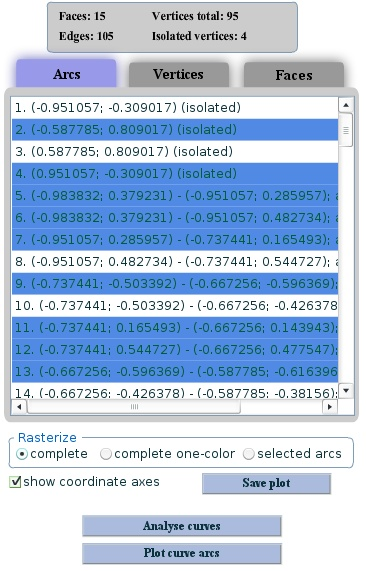

Xalci web-demo has an intuitively simple interface. To compute an arrangement, type in polynomial equations delimited by comma or select the ones from the
Curve gallery by clicking on the corresponding curve image.
Then, click
Analyse curves button to get the lists of arcs/vertices/faces populated
with an arrangement data. Please note that for very complicated curves the analysis phase may take a while. Though, for the majority of algebraic curves
tested, it will not take more than a minute.
Each curve arc is given in the following format:
(starting-x; starting-y) -
(final-x; final-y); arcno: arc number | vertical
Here
starting-x/y and
ending-x/y
specify the coordinates or the end-points of a curve arc, while
arcno defines a 0-based index (rank) of the arc at certain x-coordinate amongst all curve arcs crossing the vertical line at this x-coordinate counted from bottom to top;
vertical means that the curve arc is vertical, and therefore does not have an assigned arc number. Isolated singularities (e.g., the one given by an implicit equation x^2+y^2=0) are treated as degenerate curve arcs for which the end-points coincide.

Once a curve is analysed, we can visualize a complete curve by leaving a check box `
complete' checked and clicking on
Plot curve arcs button. By default, curve arcs will be rasterized in different colors. To visualize a complete curve using one color, use `
complete one-color' checkbox.
To visualize only selected curve arcs, use `
selected arcs' checkbox, then hold Ctrl key and choose the arcs to be rasterized from the arcs list. Finally, click
Plot curve arcs to see the results.
For more information on the arrangement and visualization algorithms visit
Xalci homepage.